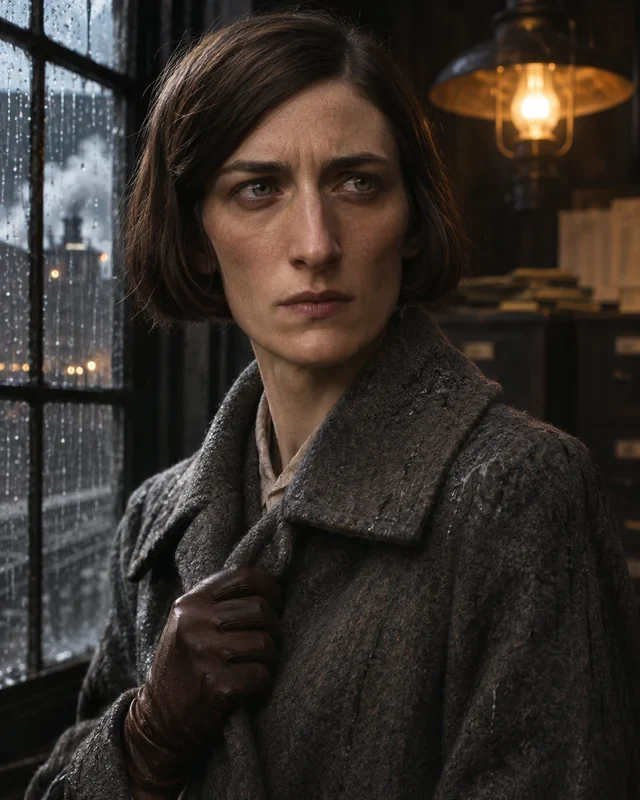

ИСТОРИЯ ГЕРОЯ
Иллюстрация временно недоступна. Текст и решения можно читать дальше.
Дело №002 · Кинематографическое расследование · Safari-бета

У железнодорожного виадука находят мёртвого человека. Вскоре женщина просит найти пропавшего брата. Записи в путевых книгах противоречат друг другу — и кто-то очень не хочет, чтобы их сравнили.
Читайте сцены и выбирайте действия. Решения влияют на судьбы людей и исход дела.
Собирайте улики. В «Выводах» можно сопоставить две находки; подсказки доступны по нажатию, ошибок не бойтесь.
Прогресс сохраняется после решений, если браузер разрешает хранение. Продолжайте за того же сыщика.
Самостоятельная Safari-бета Дела №002. Прогресс Дела №001 не изменяется.
ДЕЛО №002 · АРХИВ РАССЛЕДОВАНИЙ
У каждого героя свой подход к расследованию. Выберите того, чьими глазами увидите эту историю.
Выбор повлияет только на новую попытку. Старые прохождения не изменяются.
Иллюстрация временно недоступна. Текст и решения можно читать дальше.
Расследование создано для вертикального экрана. Ваш прогресс сохранён.